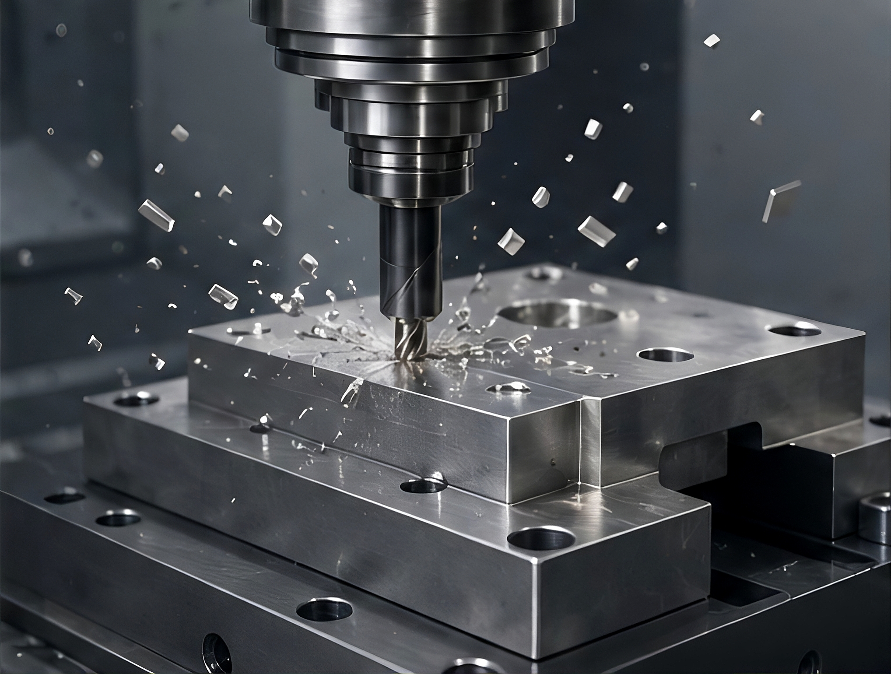

GUIDE
材料选择指南
按强度、重量、耐腐蚀、成本和加工适配性筛选材料。
精密零部件研发与生产全流程参考阵地。在这里你可以查阅加工工艺详解、材料性能参数、真实落地零部件案例，下载标准化工程资料。从零件设计 DFM 审查、工艺选型、材料比对，到报价沟通、出货验收，一站式获取工业制造参考信息，高效推进零部件项目落地。

浏览、下载、分享适配 CNC 加工、3D 打印、钣金、注塑、铸造工艺的工业零部件 3D 模型库。平台兼容 STEP、IGES、STL、OBJ 等主流三维格式，可供研发工程师参考成熟零件结构、评估设计可制造性。你也可以上传自有三维模型，和行业从业者交流结构设计思路。

适用于数控车削加工，含完整公差标注

金属3D打印优化结构，轻量化设计
激光切割折弯工艺，含展开图

ABS材质，含拔模斜度和分型线

多台阶轴类，含键槽和螺纹特征

微纳3D打印，生物相容性材料

砂型铸造工艺，含浇冒口设计

五轴联动加工，含曲面特征
汇集主流精密制造工艺知识库，面向研发、采购工程师提供选型参考。你可以快速了解每种加工方式适用零件形态、材料范围、精度上限、表面处理能力，在项目前期完成工艺对比，规避设计无法加工、成本超标、交付周期失控等问题。
CNC 数控加工依靠数控程序驱动刀具完成材料去除加工，能够实现复杂型腔、异形曲面、高精度孔系结构成型，既支持单件样品试制、中小批量试产，也可承接稳定规模化量产，广泛应用于金属与高性能工程塑料精密零部件制造
铝合金、不锈钢、碳钢、铜合金、钛合金；POM、PEEK、尼龙、PC、亚克力等工程塑料。可依据零件载荷、使用环境、轻量化需求完成材质比对选型。
常规量产加工精度 ±0.05mm；精密加工等级可达 ±0.01mm；超高精密定制加工最高可达 ±0.005mm。零件壁厚、结构形态、装夹方案都会影响最终可实现精度。
标准铣削表面 Ra 0.8–3.2μm；精加工可达到 Ra 0.4μm；搭配抛光工序可实现 Ra 0.2μm 镜面效果。粗糙度直接影响零件装配密封性、摩擦特性以及阳极氧化、电镀等后续表面处理效果。
常规结构零件 3–7 天；多工序复杂异形零件 7–14 天；型腔模具、超高精密定制零部件 14–30 天，可根据订单排产协调交付计划。
增材制造技术，通过逐层堆积材料成型复杂几何结构，适合快速原型和小批量定制。
SLA（光固化）、SLS（选择性激光烧结）、FDM（熔融沉积）、SLM（金属激光熔化）
SLA ±0.1mm，SLS ±0.2mm，FDM ±0.3mm，SLM ±0.05mm
0.025mm（微纳级），0.05-0.1mm（精密级），0.2-0.3mm（标准级）
1-3 天（快速原型），3-7 天（功能件），7-14 天（金属件）
激光切割、数控折弯和冲压成型，适用于薄板金属件的高效生产。
冷轧钢板、不锈钢板、铝板、铜板，厚度 0.5-6mm
切割 ±0.1mm，折弯 ±0.2mm，孔位 ±0.05mm
喷涂、电镀、阳极氧化、拉丝、钝化
2-5 天（简单件），5-10 天（复杂焊接件）
热塑性塑料熔融高压注入模具型腔，适合大批量塑料零件生产。
ABS、PP、PC、PA、POM、PEEK、TPE 等
一般级 ±0.1mm，精密级 ±0.05mm，超精密级 ±0.02mm
10 万次（铝模），30-50 万次（钢模），100 万次（硬模）
7-14 天（手板），20-35 天（软模），35-60 天（硬模）
将熔融金属浇入铸型获得毛坯，适用于复杂形状和大型金属件。
砂型铸造、熔模铸造、压铸、离心铸造、连续铸造
铸铁、铸钢、铝合金、铜合金、锌合金、镁合金
CT7-CT9（砂铸），CT4-CT6（熔模），CT3-CT5（压铸）
15-30 天（砂铸），20-45 天（熔模），10-20 天（压铸）
改善零件外观、耐腐蚀性和功能特性的后处理工艺。
铝合金、不锈钢、碳钢、铜合金、钛合金、工程塑料
阳极氧化、电镀、喷涂、粉末喷涂、热处理、激光打标、抛光、钝化
阳极氧化 5-25μm，电镀 3-50μm，喷涂 40-120μm
2-5 天（标准件），5-10 天（复杂件），7-14 天（特殊工艺）
汇集机加工常用金属、工程塑料物性参数，结合 CNC、钣金、3D 打印、 注塑工艺特性对比选材方案，帮您精准匹配零部件工况需求，减少试错成本。
如果您在材料选型、方案评估上存在疑问，可 联系工艺工程师 获取免费咨询。
从工程图纸、尺寸公差、零件结构到不同制造工艺的设计边界， 提前识别影响加工成本、精度、质量与交付周期的关键设计问题。
关注精密制造技术、材料应用、行业趋势及平台动态， 获取与零部件研发、采购和项目交付相关的最新内容。
汇总零部件报价、图纸准备、材料选型、工艺评估、质量验收及订单交付中的 常见问题，帮助研发与采购人员快速确认项目前期要求，减少重复沟通。
查看全部常见问题建议提供 3D 模型或二维工程图、材料要求、数量、表面处理方式、 关键尺寸公差以及零件使用场景。信息越完整，报价和工艺评估结果越准确。
可提供零件载荷、工作温度、腐蚀环境、重量限制和预算要求， 工艺工程师将结合 CNC、钣金、3D 打印、注塑等方式协助完成方案比对。
支持从单件样品、快速原型到中小批量试产及稳定量产。 可根据项目验证阶段调整加工方案、检测要求和交付节奏。
可根据项目需求提供首件检测报告、尺寸检测记录、材料证明、 表面处理报告及其他约定的质量文件，具体内容以报价和订单要求为准。
查阅工艺参数、选材标准与 DFM 设计规范；上传图纸模型，同步获取精准加工报价。